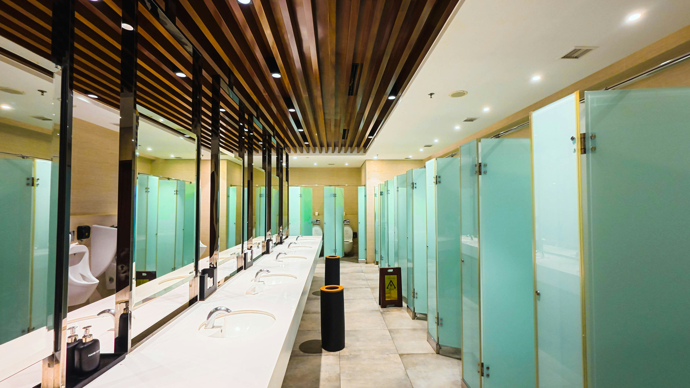
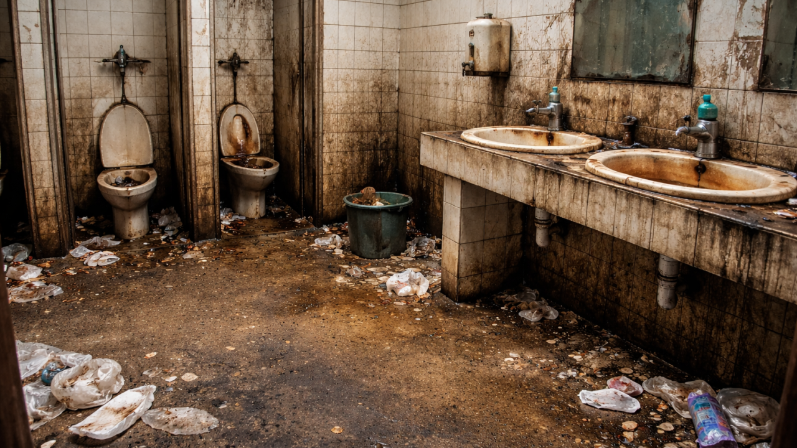
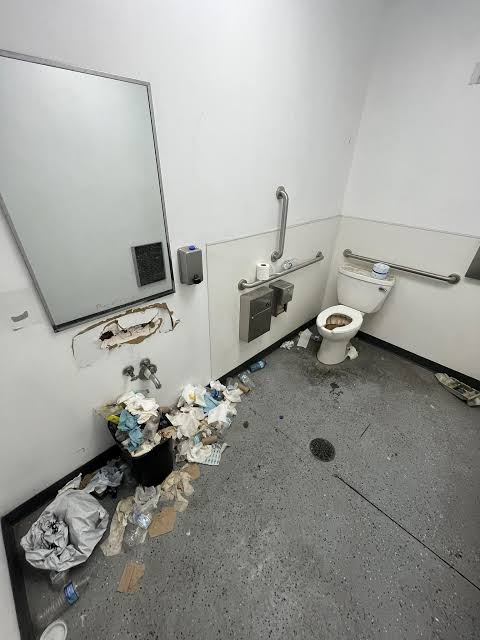
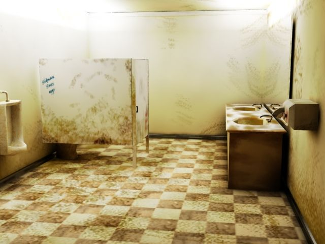
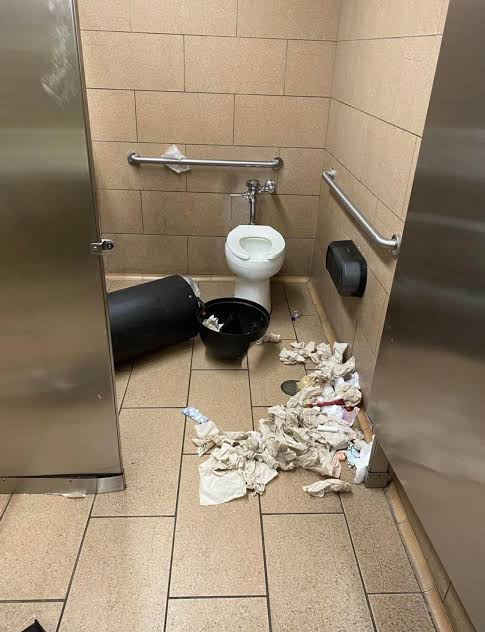
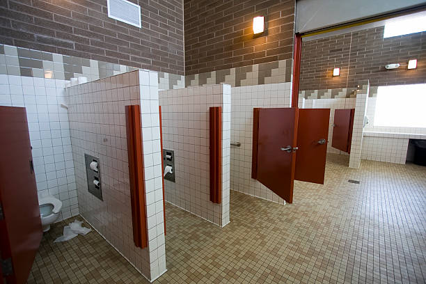
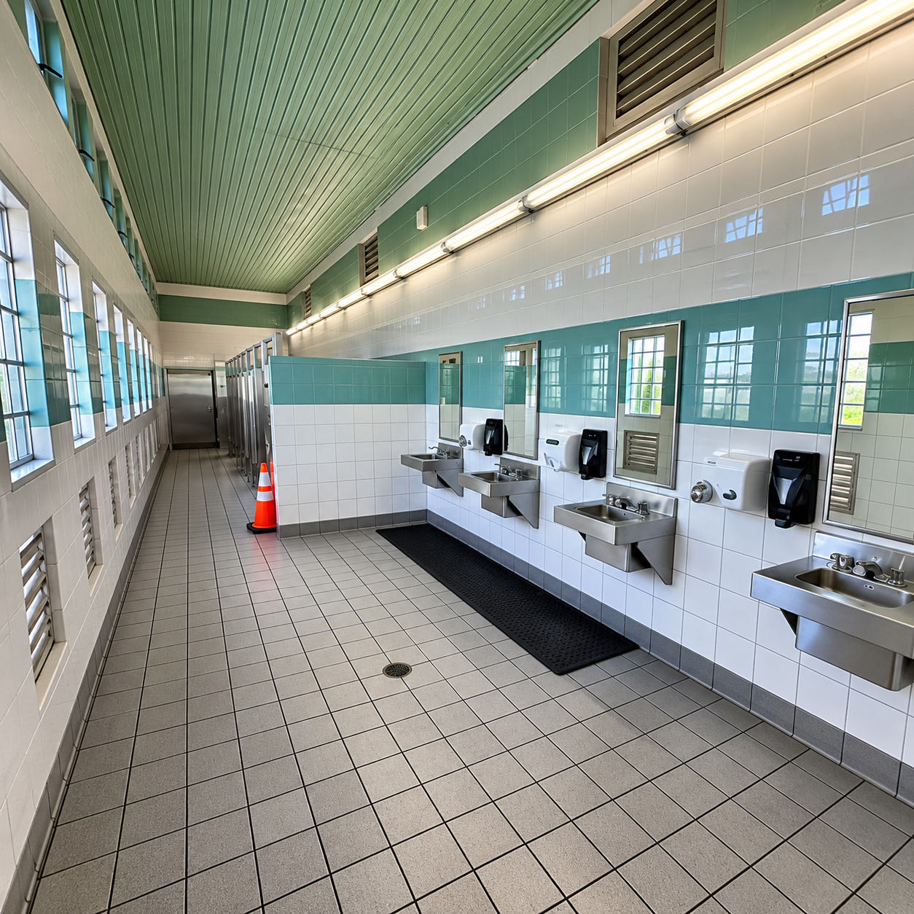

FILE NO. 001
SAFE
The Royal Flush

A restroom so unexpectedly clean you almost feel obligated to leave a tip.
Wrong Turn, Right Place.
Not all pit stops are created equal.
KNOW THE WARNING SIGNS

A restroom so unexpectedly clean you almost feel obligated to leave a tip.

The restroom technically works, which is about the nicest thing we can say.

The lighting flickers, the door barely closes, and the smell has its own personality.
The investigation doesn't end here. There are plenty of questionable stops still waiting to be documented.
Photographic proof. Unfortunately.
SCROLL TO INSPECT THE EVIDENCE →






Every road trip has a destination. This is not it.
Actual location shown. Reviews are fictional.